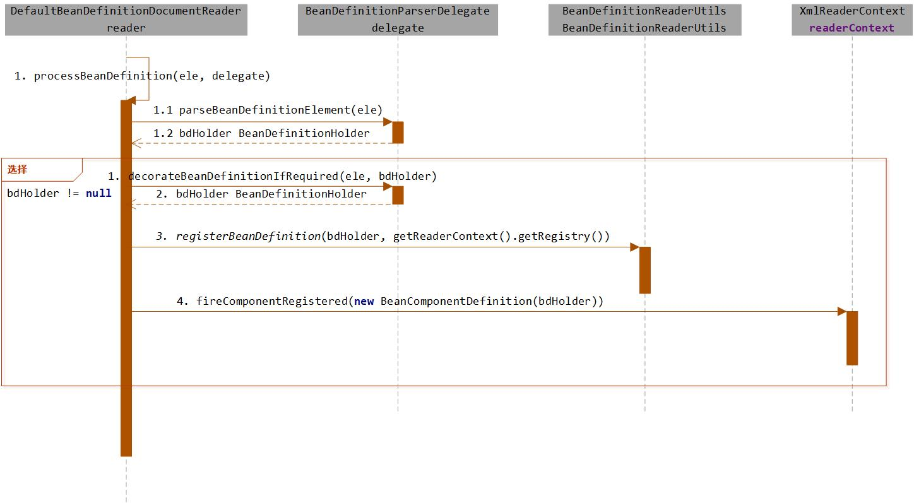

Spring源码分析（07）bean标签的解析及注册
摘要：本文结合《Spring源码深度解析》来分析Spring 5.0.6版本的源代码。若有描述错误之处，欢迎指正。
在上一篇中提到过Spring中的标签包括默认标签和自定义标签两种，而两种标签的用法以及解析方式存在着很大的不同。本节开始详细分析默认标签的解析过程。
默认标签的解析是在parseDefaultElement函数中进行的，函数中的功能逻辑一目了然，分别对4种不同标签（import、alias、bean和beans）做了不同的处理。
private void parseDefaultElement(Element ele, BeanDefinitionParserDelegate delegate) {
// 对import标签的处理
// String IMPORT_ELEMENT = "import";
if (delegate.nodeNameEquals(ele, IMPORT_ELEMENT)) {
importBeanDefinitionResource(ele);
}
// 对alias标签的处理
// String ALIAS_ELEMENT = "alias";
else if (delegate.nodeNameEquals(ele, ALIAS_ELEMENT)) {
processAliasRegistration(ele);
}
// 对bean标签的处理
// String BEAN_ELEMENT = BeanDefinitionParserDelegate.BEAN_ELEMENT;
// BeanDefinitionParserDelegate.BEAN_ELEMENT = "bean";
else if (delegate.nodeNameEquals(ele, BEAN_ELEMENT)) {
processBeanDefinition(ele, delegate);
}
// 对beans标签的处理
// String NESTED_BEANS_ELEMENT = "beans";
else if (delegate.nodeNameEquals(ele, NESTED_BEANS_ELEMENT)) {
// recurse
doRegisterBeanDefinitions(ele);
}
}在4种标签中，对bean标签的解析最为复杂也最为重要，所以从此标签开始深入分析，如果能理解这个标签的解析过程，其他标签的解析就迎刃而解了。首先看看函数processBeanDefinition(ele, delegate)。
/**
* Process the given bean element, parsing the bean definition
* and registering it with the registry.
*/
protected void processBeanDefinition(Element ele, BeanDefinitionParserDelegate delegate) {
// 委托给代理进行解析
BeanDefinitionHolder bdHolder = delegate.parseBeanDefinitionElement(ele);
if (bdHolder != null) {
// 装饰
bdHolder = delegate.decorateBeanDefinitionIfRequired(ele, bdHolder);
try {
// Register the final decorated instance.
// 注册
BeanDefinitionReaderUtils.registerBeanDefinition(bdHolder, getReaderContext().getRegistry());
}
catch (BeanDefinitionStoreException ex) {
getReaderContext().error("Failed to register bean definition with name '" +
bdHolder.getBeanName() + "'", ele, ex);
}
// Send registration event.
// 发送注册事件
getReaderContext().fireComponentRegistered(new BeanComponentDefinition(bdHolder));
}
}乍一看，似乎一头雾水，没有以前的函数那样清晰的逻辑。大致的逻辑总结如下。
（1）首先委托BeanDefinitionDelegate类的parseBeanDefinitionElement方法进行元素解析，返回BeanDefinitionHolder类型的实例bdHolder，经过这个方法后，bdHolder实例已经包含我们配置文件中配置的各种属性了，例如class、name、id、alias之类的属性。
（2）当返回的dbHolder不为空的情况下若存在默认标签的子节点下再有自定义属性，还需要再次对自定义标签进行解析。
（3）解析完成后，需要对解析后的bdHolder进行注册，同样，注册操作委托给了BeanDefinitionReaderUtils的registerBeanDefinition方法。
（4）最后发出响应事件，通知相关的监听器，这个bean已经加载完成了。
配合时序图，可能会更容易理解。

解析BeanDefinition
下面我们就针对各个操作做具体分析。首先我们从元素解析及信息提取开始，也就是BeanDefinitionHolder bdHolder = delegate.parseBeanDefinitionElement(ele)，进入BeanDefinitionDelegate类的parseBeanDefinitionElement方法。
/**
* Parses the supplied {@code <bean>} element. May return {@code null}
* if there were errors during parse. Errors are reported to the
* {@link org.springframework.beans.factory.parsing.ProblemReporter}.
*/
@Nullable
public BeanDefinitionHolder parseBeanDefinitionElement(Element ele) {
// 继续跟踪代码->1
return parseBeanDefinitionElement(ele, null);
}
/**
* Parses the supplied {@code <bean>} element. May return {@code null}
* if there were errors during parse. Errors are reported to the
* {@link org.springframework.beans.factory.parsing.ProblemReporter}.
*/
// ->1继续跟踪代码
@Nullable
public BeanDefinitionHolder parseBeanDefinitionElement(Element ele, @Nullable BeanDefinition containingBean) {
// 解析id属性
String id = ele.getAttribute(ID_ATTRIBUTE);
// 解析name属性
String nameAttr = ele.getAttribute(NAME_ATTRIBUTE);
// 分割name属性
List<String> aliases = new ArrayList<>();
if (StringUtils.hasLength(nameAttr)) {
String[] nameArr = StringUtils.tokenizeToStringArray(nameAttr, MULTI_VALUE_ATTRIBUTE_DELIMITERS);
aliases.addAll(Arrays.asList(nameArr));
}
String beanName = id;
if (!StringUtils.hasText(beanName) && !aliases.isEmpty()) {
beanName = aliases.remove(0);
if (logger.isDebugEnabled()) {
logger.debug("No XML 'id' specified - using '" + beanName +
"' as bean name and " + aliases + " as aliases");
}
}
if (containingBean == null) {
checkNameUniqueness(beanName, aliases, ele);
}
AbstractBeanDefinition beanDefinition = parseBeanDefinitionElement(ele, beanName, containingBean);
if (beanDefinition != null) {
if (!StringUtils.hasText(beanName)) {
try {
// 如果不存在beanName，那么根据Spring中提供的命名规则为当前bean生成对应的beanName
if (containingBean != null) {
beanName = BeanDefinitionReaderUtils.generateBeanName(
beanDefinition, this.readerContext.getRegistry(), true);
}
else {
beanName = this.readerContext.generateBeanName(beanDefinition);
// Register an alias for the plain bean class name, if still possible,
// if the generator returned the class name plus a suffix.
// This is expected for Spring 1.2/2.0 backwards compatibility.
String beanClassName = beanDefinition.getBeanClassName();
if (beanClassName != null &&
beanName.startsWith(beanClassName) && beanName.length() > beanClassName.length() &&
!this.readerContext.getRegistry().isBeanNameInUse(beanClassName)) {
aliases.add(beanClassName);
}
}
if (logger.isDebugEnabled()) {
logger.debug("Neither XML 'id' nor 'name' specified - " +
"using generated bean name [" + beanName + "]");
}
}
catch (Exception ex) {
error(ex.getMessage(), ele);
return null;
}
}
String[] aliasesArray = StringUtils.toStringArray(aliases);
return new BeanDefinitionHolder(beanDefinition, beanName, aliasesArray);
}
return null;
}以上便是对默认标签解析的全过程了。当然，对Spring的解析犹如洋葱剥皮一样，一层一层地进行，尽管现在只能看到对属性id以及name的解析，但是很庆幸，思路我们已经了解了。在开始对属性展开全面解析前，Spring在外层又做了一个当前层的功能架构，在当前层完成的主要工作包括如下内容。
（1）提取元素中的id以及name属性。
（2）进一步解析其他所有属性并统一封装至GenericBeanDefinition类型的实例中。
（3）如果检测到bean没有指定beanName，那么使用默认规则为此Bean生成beanName。
（4）将获取到的信息封装到BeanDefinitionHolder的实例中。
我们进一步查看步骤（2）中对标签其他属性的解析过程。
/**
* Parse the bean definition itself, without regard to name or aliases. May return
* {@code null} if problems occurred during the parsing of the bean definition.
*/
@Nullable
public AbstractBeanDefinition parseBeanDefinitionElement(
Element ele, String beanName, @Nullable BeanDefinition containingBean) {
this.parseState.push(new BeanEntry(beanName));
String className = null;
// 解析class属性
if (ele.hasAttribute(CLASS_ATTRIBUTE)) {
className = ele.getAttribute(CLASS_ATTRIBUTE).trim();
}
String parent = null;
// 解析parent属性
if (ele.hasAttribute(PARENT_ATTRIBUTE)) {
parent = ele.getAttribute(PARENT_ATTRIBUTE);
}
try {
// 创建用于承载属性的AbstractBeanDefinition类型的GenericBeanDefinition
AbstractBeanDefinition bd = createBeanDefinition(className, parent);
// 硬编码解析默认bean的各种属性
parseBeanDefinitionAttributes(ele, beanName, containingBean, bd);
// 提取description
bd.setDescription(DomUtils.getChildElementValueByTagName(ele, DESCRIPTION_ELEMENT));
// 解析元数据
parseMetaElements(ele, bd);
// 解析lookup-method属性
parseLookupOverrideSubElements(ele, bd.getMethodOverrides());
// 解析replaced-method
parseReplacedMethodSubElements(ele, bd.getMethodOverrides());
// 解析构造函数参数
parseConstructorArgElements(ele, bd);
// 解析property子元素
parsePropertyElements(ele, bd);
// 解析qualifier子元素
parseQualifierElements(ele, bd);
bd.setResource(this.readerContext.getResource());
bd.setSource(extractSource(ele));
return bd;
}
catch (ClassNotFoundException ex) {
error("Bean class [" + className + "] not found", ele, ex);
}
catch (NoClassDefFoundError err) {
error("Class that bean class [" + className + "] depends on not found", ele, err);
}
catch (Throwable ex) {
error("Unexpected failure during bean definition parsing", ele, ex);
}
finally {
this.parseState.pop();
}
return null;
} 终于，bean标签的所有属性，不论是常用的还是不常用的我们都看到了，尽管有些复杂的属性还需要进一步的解析，不过丝毫不会影响我们兴奋的心情。接下来，我们继续一些复杂标签属性的解析。
1. 创建用于承载属性的BeanDefinition
BeanDefinition是一个接口，在Spring中存在三种实现：RootBeanDefinition、ChildBeanDefinition以及GenericBeanDefinition。三种实现均继承了AbstractBeanDefinition，其中BeanDefinition是配置文件
在配置文件中可以定义父
Spring通过BeanDefinition将配置文件中的
因此，要解析属性首先要创建用于承载属性的实例，也就是创建GenericBeanDefinition类型的实例。而代码createBeanDefinition(className, parent)的作用就是实现此功能。
/**
* Create a bean definition for the given class name and parent name.
* @param className the name of the bean class
* @param parentName the name of the bean's parent bean
* @return the newly created bean definition
* @throws ClassNotFoundException if bean class resolution was attempted but failed
*/
protected AbstractBeanDefinition createBeanDefinition(@Nullable String className, @Nullable String parentName)
throws ClassNotFoundException {
return BeanDefinitionReaderUtils.createBeanDefinition(
parentName, className, this.readerContext.getBeanClassLoader());
}
/**
* Create a new GenericBeanDefinition for the given parent name and class name,
* eagerly loading the bean class if a ClassLoader has been specified.
* @param parentName the name of the parent bean, if any
* @param className the name of the bean class, if any
* @param classLoader the ClassLoader to use for loading bean classes
* (can be {@code null} to just register bean classes by name)
* @return the bean definition
* @throws ClassNotFoundException if the bean class could not be loaded
*/
public static AbstractBeanDefinition createBeanDefinition(
@Nullable String parentName, @Nullable String className, @Nullable ClassLoader classLoader) throws ClassNotFoundException {
GenericBeanDefinition bd = new GenericBeanDefinition();
// parentName可能为空
bd.setParentName(parentName);
if (className != null) {
if (classLoader != null) {
// 如果classLoader不为空，则使用以传入的classLoader加载类对象，否则只是记录className
bd.setBeanClass(ClassUtils.forName(className, classLoader));
}
else {
bd.setBeanClassName(className);
}
}
return bd;
}2. 解析各种属性
当我们创建了bean信息的承载实例后，便可以进行bean信息的各种属性解析了，首先我们进入parseBeanDefinitionAttributes方法。parseBeanDefinitionAttributes方法是对element所有元素属性进行解析：
/**
* Apply the attributes of the given bean element to the given bean * definition.
* @param ele bean declaration element
* @param beanName bean name
* @param containingBean containing bean definition
* @return a bean definition initialized according to the bean element attributes
*/
public AbstractBeanDefinition parseBeanDefinitionAttributes(Element ele, String beanName,
@Nullable BeanDefinition containingBean, AbstractBeanDefinition bd) {
// 解析singleton属性
// 检查当前bean是否有singleton属性，有则提示应该使用scope属性，并抛出异常
if (ele.hasAttribute(SINGLETON_ATTRIBUTE)) {
error("Old 1.x 'singleton' attribute in use - upgrade to 'scope' declaration", ele);
}
// 解析scope属性
else if (ele.hasAttribute(SCOPE_ATTRIBUTE)) {
// 获取并设置scope属性值
bd.setScope(ele.getAttribute(SCOPE_ATTRIBUTE));
}
else if (containingBean != null) {
// Take default from containing bean in case of an inner bean definition.
// 在嵌入beanDefinition情况下且没有单独指定scope属性则使用父类默认的属性
bd.setScope(containingBean.getScope());
}
// 解析abstract属性
if (ele.hasAttribute(ABSTRACT_ATTRIBUTE)) {
bd.setAbstract(TRUE_VALUE.equals(ele.getAttribute(ABSTRACT_ATTRIBUTE)));
}
// 解析lazy-init属性
String lazyInit = ele.getAttribute(LAZY_INIT_ATTRIBUTE);
if (DEFAULT_VALUE.equals(lazyInit)) {
lazyInit = this.defaults.getLazyInit();
}
// 若没有设置或设置成其他字符都会被设置为false
bd.setLazyInit(TRUE_VALUE.equals(lazyInit));
// 解析autowire属性
String autowire = ele.getAttribute(AUTOWIRE_ATTRIBUTE);
bd.setAutowireMode(getAutowireMode(autowire));
// 解析depends-on属性
if (ele.hasAttribute(DEPENDS_ON_ATTRIBUTE)) {
String dependsOn = ele.getAttribute(DEPENDS_ON_ATTRIBUTE);
bd.setDependsOn(StringUtils.tokenizeToStringArray(dependsOn, MULTI_VALUE_ATTRIBUTE_DELIMITERS));
}
// 解析autowire-candidate属性
String autowireCandidate = ele.getAttribute(AUTOWIRE_CANDIDATE_ATTRIBUTE);
if ("".equals(autowireCandidate) || DEFAULT_VALUE.equals(autowireCandidate)) {
String candidatePattern = this.defaults.getAutowireCandidates();
if (candidatePattern != null) {
String[] patterns = StringUtils.commaDelimitedListToStringArray(candidatePattern);
bd.setAutowireCandidate(PatternMatchUtils.simpleMatch(patterns, beanName));
}
}
else {
bd.setAutowireCandidate(TRUE_VALUE.equals(autowireCandidate));
}
// 解析primary属性
if (ele.hasAttribute(PRIMARY_ATTRIBUTE)) {
bd.setPrimary(TRUE_VALUE.equals(ele.getAttribute(PRIMARY_ATTRIBUTE)));
}
// 解析init-method属性
if (ele.hasAttribute(INIT_METHOD_ATTRIBUTE)) {
String initMethodName = ele.getAttribute(INIT_METHOD_ATTRIBUTE);
bd.setInitMethodName(initMethodName);
}
else if (this.defaults.getInitMethod() != null) {
bd.setInitMethodName(this.defaults.getInitMethod());
bd.setEnforceInitMethod(false);
}
// 解析destroy-method属性
if (ele.hasAttribute(DESTROY_METHOD_ATTRIBUTE)) {
String destroyMethodName = ele.getAttribute(DESTROY_METHOD_ATTRIBUTE);
bd.setDestroyMethodName(destroyMethodName);
}
else if (this.defaults.getDestroyMethod() != null) {
bd.setDestroyMethodName(this.defaults.getDestroyMethod());
bd.setEnforceDestroyMethod(false);
}
// 解析factory-method属性
if (ele.hasAttribute(FACTORY_METHOD_ATTRIBUTE)) {
bd.setFactoryMethodName(ele.getAttribute(FACTORY_METHOD_ATTRIBUTE));
}
// 解析factory-bean属性
if (ele.hasAttribute(FACTORY_BEAN_ATTRIBUTE)) {
bd.setFactoryBeanName(ele.getAttribute(FACTORY_BEAN_ATTRIBUTE));
}
return bd;
}我们可以清楚地看到Spring完成了对所有bean属性的解析，这些属性中有很多是我们经常使用的，同时我相信也一定会有或多或少的属性是读者不熟悉或是没有使用过的，感兴趣的读者可以查阅相关资料进一步了解每个属性。
3. 解析子元素meta
在开始解析元数据的分析前，我们先回顾下元数据meta属性的使用。
<bean id="mySpringBean" class="org.cellphone.uc.MySpringBean">
<meta key="str" value="I'm a test attribute."/>
</bean>这段代码并不会直接体现在MySpringBean的属性当中，而是一个额外的声明，当需要使用里面的信息的时候可以通过BeanDefinition的getAttribute(key)方法进行获取。
对meta属性的解析代码如下：
public void parseMetaElements(Element ele, BeanMetadataAttributeAccessor attributeAccessor) {
// 获取当前节点的所有子元素
NodeList nl = ele.getChildNodes();
for (int i = 0; i < nl.getLength(); i++) {
Node node = nl.item(i);
// 提取meta
if (isCandidateElement(node) && nodeNameEquals(node, META_ELEMENT)) {
Element metaElement = (Element) node;
String key = metaElement.getAttribute(KEY_ATTRIBUTE);
String value = metaElement.getAttribute(VALUE_ATTRIBUTE);
// 使用key、value构造BeanMetadataAttribute
BeanMetadataAttribute attribute = new BeanMetadataAttribute(key, value);
attribute.setSource(extractSource(metaElement));
// 记录信息
attributeAccessor.addMetadataAttribute(attribute);
}
}
}4. 解析子元素lookup-method
同样，子元素lookup-method似乎并不是很常用，但是在某些时候它的确是非常有用的属性，通常我们称它为获取器注入。应用《Spring in Action》中的一句话：获取器注入是一种特殊的方法注入，它是把一个方法声明为返回某种类型的bean，但实际要返回的bean是在配置文件里面配置的，此方法可用在设计有些可插拔的功能上，接触程序依赖。我们看看具体的应用。
（1）首先创建一个父类：
public class User {
public void showMe() {
System.out.println("I am a user");
}
}（2）创建其子类并覆盖showMe方法：
public class Teacher extends User {
@Override
public void showMe() {
System.out.println("I am a teacher");
}
}（3）创建调用方法：
public abstract class GetBeanTest {
public void showMe() {
this.getBean().showMe();
}
public abstract User getBean();
}（4）创建测试方法：
public class Main {
public static void main(String[] args) {
ApplicationContext context = new ClassPathXmlApplicationContext("spring/lookup-test.xml");
GetBeanTest getBeanTest = (GetBeanTest) context.getBean("getBeanTest");
getBeanTest.showMe();
}
}到现在为止，除了配置文件外，整个测试方法就完成了，如果之前没有接触过获取器注入的读者可能会有疑问：抽象方法还没有被实现，怎么可以直接调用呢？答案就在Spring为我们提供的获取器中，我们看看配置文件是怎么配置的。
<?xml version="1.0" encoding="UTF-8"?>
<beans xmlns="http://www.springframework.org/schema/beans"
xmlns:xsi="http://www.w3.org/2001/XMLSchema-instance"
xsi:schemaLocation="http://www.springframework.org/schema/beans
http://www.springframework.org/schema/beans/spring-beans.xsd">
<bean id="getBeanTest" class="org.cellphone.uc.GetBeanTest">
<lookup-method name="getBean" bean="teacher"/>
</bean>
<bean id="teacher" class="org.cellphone.uc.Teacher"/>
</beans>在配置文件中，我们看到了源码解析中提到的lookup-method子元素，这个配置完成的功能是动态地将teacher所代表的bean作为getBean的返回值，运行测试方法我们会看到控制台上的输出：
I am a teacher当我们的业务变更或者在其他情况下，teacher里面的业务逻辑已经不再符合我们的业务要求，需要进行替换怎么办呢？这时我们需要增加新的逻辑类：
public class Student extends User {
@Override
public void showMe() {
System.out.println("I am a student");
}
}同时修改配置文件：
<?xml version="1.0" encoding="UTF-8"?>
<beans xmlns="http://www.springframework.org/schema/beans"
xmlns:xsi="http://www.w3.org/2001/XMLSchema-instance"
xsi:schemaLocation="http://www.springframework.org/schema/beans
http://www.springframework.org/schema/beans/spring-beans.xsd">
<bean id="getBeanTest" class="org.cellphone.uc.GetBeanTest">
<lookup-method name="getBean" bean="student"/>
</bean>
<bean id="teacher" class="org.cellphone.uc.Teacher"/>
<bean id="student" class="org.cellphone.uc.Student"/>
</beans>再次运行测试类，你会发现不一样的结果：
I am a student至此，我们已经初步了解了lookup-method子元素所提供的大致功能，相信这时再次去看它的属性提取源码会觉得更有针对性。
/**
* Parse lookup-override sub-elements of the given bean element.
*/
public void parseLookupOverrideSubElements(Element beanEle, MethodOverrides overrides) {
NodeList nl = beanEle.getChildNodes();
for (int i = 0; i < nl.getLength(); i++) {
Node node = nl.item(i);
// 仅当在bean下面有子元素下且为lookup-method时有效
if (isCandidateElement(node) && nodeNameEquals(node, LOOKUP_METHOD_ELEMENT)) {
Element ele = (Element) node;
// 获取要修饰的方法
String methodName = ele.getAttribute(NAME_ATTRIBUTE);
// 获取配置返回的bean
String beanRef = ele.getAttribute(BEAN_ELEMENT);
LookupOverride override = new LookupOverride(methodName, beanRef);
override.setSource(extractSource(ele));
overrides.addOverride(override);
}
}
}上面的代码很熟悉，似乎与parseMetaElements的代码大同小异，最大的区别就是在if判断中的节点名称在这里被修改为LOOKUP_METHOD_ELEMENT。还有，在数据存储上面通过使用LookupOverride类型的实体类来进行数据承载并记录在AbstractBeanDefinition中的methodOverrides属性中。
5. 解析子元素replaced-method
这个方法主要是对bean中replaced-method子元素的提取，在开始提取分析之前我们还是预先介绍下这个元素的用法。
方法替换：可以在运行时用新的方法替换现有的方法。与之前的lookup-method不同的是，replaced-method不但可以动态地替换返回实体bean，而且还能动态地更改原有方法的逻辑。我们来看看使用示例。
（1）在changeMe中完成某个业务逻辑：
public class UserChange {
public void changeMe() {
System.out.println("change me");
}
}（2）在运营一段时间后需要改变原有的业务逻辑：
public class UserChangeReplacer implements MethodReplacer {
@Override
public Object reimplement(Object obj, Method method, Object[] args) throws Throwable {
System.out.println("我替换了原有的方法");
return null;
}
}（3）使替换后的类生效：
<?xml version="1.0" encoding="UTF-8"?>
<beans xmlns="http://www.springframework.org/schema/beans"
xmlns:xsi="http://www.w3.org/2001/XMLSchema-instance"
xsi:schemaLocation="http://www.springframework.org/schema/beans
http://www.springframework.org/schema/beans/spring-beans.xsd">
<bean id="userChange" class="org.cellphone.uc.UserChange">
<replaced-method name="changeMe" replacer="replacer"/>
</bean>
<bean id="replacer" class="org.cellphone.uc.UserChangeReplacer"/>
</beans>（4）测试：
public class ReplaceMain {
public static void main(String[] args) {
ApplicationContext context = new ClassPathXmlApplicationContext("spring/replace-test.xml");
UserChange change = (UserChange) context.getBean("userChange");
change.changeMe();
}
}好了，运行测试类就可以看到预期的效果了，控制台成功打印出“我替换了原有的方法”，也就是说我们做到了动态替换原有方法，知道了这个元素的用法，我们再次来看元素的提取过程：
/**
* Parse replaced-method sub-elements of the given bean element.
*/
public void parseReplacedMethodSubElements(Element beanEle, MethodOverrides overrides) {
NodeList nl = beanEle.getChildNodes();
for (int i = 0; i < nl.getLength(); i++) {
Node node = nl.item(i);
// 仅当在bean下面有子元素下且为replaced-method时有效
if (isCandidateElement(node) && nodeNameEquals(node, REPLACED_METHOD_ELEMENT)) {
Element replacedMethodEle = (Element) node;
// 提取要替换的旧的方法
String name = replacedMethodEle.getAttribute(NAME_ATTRIBUTE);
// 提取对应的新的替换方法
String callback = replacedMethodEle.getAttribute(REPLACER_ATTRIBUTE);
ReplaceOverride replaceOverride = new ReplaceOverride(name, callback);
// Look for arg-type match elements.
List<Element> argTypeEles = DomUtils.getChildElementsByTagName(replacedMethodEle, ARG_TYPE_ELEMENT);
for (Element argTypeEle : argTypeEles) {
// 记录参数
String match = argTypeEle.getAttribute(ARG_TYPE_MATCH_ATTRIBUTE);
match = (StringUtils.hasText(match) ? match : DomUtils.getTextValue(argTypeEle));
if (StringUtils.hasText(match)) {
replaceOverride.addTypeIdentifier(match);
}
}
replaceOverride.setSource(extractSource(replacedMethodEle));
overrides.addOverride(replaceOverride);
}
}
}我们可以看到无论是lookup-method还是replaced-method都是构造了一个MethodOverride，并最终记录在了AbstractBeanDefinition中的methodOverrides属性中。而这个属性如何使用以完成它所提供的功能我们会在后续的章节进行详细介绍。
6.解析子元素constructor-arg
对构造函数的解析式非常常用，也是非常复杂的，下面举个简单的小例子：
<beans>
<!-- 默认情况是按照参数的顺序注入，当指定index索引后就可以改变注入参数的顺序 -->
<bean id= "helloBean" class="com.HelloBean">
<constructor-arg index="0">
<value>Hello</value>
</cibstructor-arg>
<constructor-arg index="1">
<value>World</value>
</cibstructor-arg>
</bean>
</beans>上面的配置是Spring构造函数配置中最基础的配置，实现的功能就是对HelloBean自动寻找对应的构造函数，并在初始化的时候将设置的参数传入。那么让我们来看看具体的XML解析过程。
对于constructor-arg子元素的解析，Spring是通过parseConstructorArgElements函数来实现的，具体的代码如下：
/**
* Parse constructor-arg sub-elements of the given bean element.
*/
public void parseConstructorArgElements(Element beanEle, BeanDefinition bd) {
NodeList nl = beanEle.getChildNodes();
for (int i = 0; i < nl.getLength(); i++) {
Node node = nl.item(i);
if (isCandidateElement(node) && nodeNameEquals(node, CONSTRUCTOR_ARG_ELEMENT)) {
// 解析constructor-arg
parseConstructorArgElement((Element) node, bd);
}
}
}这个构中遍历所有子元素，也就是提取所有constructor-arg，然后进行解析，具体的解析被放置在了另个函数parseConstructorArgElement中，
/**
* Parse a constructor-arg element.
*/
public void parseConstructorArgElement(Element ele, BeanDefinition bd) {
// 提取index属性
String indexAttr = ele.getAttribute(INDEX_ATTRIBUTE);
// 提取type属性
String typeAttr = ele.getAttribute(TYPE_ATTRIBUTE);
// 提取name属性
String nameAttr = ele.getAttribute(NAME_ATTRIBUTE);
if (StringUtils.hasLength(indexAttr)) {
try {
int index = Integer.parseInt(indexAttr);
if (index < 0) {
error("'index' cannot be lower than 0", ele);
}
else {
try {
this.parseState.push(new ConstructorArgumentEntry(index));
// 解析ele对应的属性元素
Object value = parsePropertyValue(ele, bd, null);
ConstructorArgumentValues.ValueHolder valueHolder = new ConstructorArgumentValues.ValueHolder(value);
if (StringUtils.hasLength(typeAttr)) {
valueHolder.setType(typeAttr);
}
if (StringUtils.hasLength(nameAttr)) {
valueHolder.setName(nameAttr);
}
valueHolder.setSource(extractSource(ele));
// 不允许重复指定相同参数
if (bd.getConstructorArgumentValues().hasIndexedArgumentValue(index)) {
error("Ambiguous constructor-arg entries for index " + index, ele);
}
else {
bd.getConstructorArgumentValues().addIndexedArgumentValue(index, valueHolder);
}
}
finally {
this.parseState.pop();
}
}
}
catch (NumberFormatException ex) {
error("Attribute 'index' of tag 'constructor-arg' must be an integer", ele);
}
}
else {
// 没有index属性则自动寻找
try {
this.parseState.push(new ConstructorArgumentEntry());
Object value = parsePropertyValue(ele, bd, null);
ConstructorArgumentValues.ValueHolder valueHolder = new ConstructorArgumentValues.ValueHolder(value);
if (StringUtils.hasLength(typeAttr)) {
valueHolder.setType(typeAttr);
}
if (StringUtils.hasLength(nameAttr)) {
valueHolder.setName(nameAttr);
}
valueHolder.setSource(extractSource(ele));
bd.getConstructorArgumentValues().addGenericArgumentValue(valueHolder);
}
finally {
this.parseState.pop();
}
}
}上面一段代码涉及的逻辑并不复杂，首先是提取constructor-arg上必要的属性（index、type、name）。
如果配置中指定了index属性，那么操作步骤如下：
（1）解析constructor-arg的子元素。
（2）使用ConstructorArgumentValues.ValueHolder来封装解析出来的元素。
（3）将type、name和index属性一并封装在ConstructorArgumentValues.ValueHolder中并添加至当前BeanDefinition的constructorArgumentValues的indexedArgumentValues属性中。
如果没有指定index属性，那么操作步骤如下：
（1）解析constructor-arg的子元素。
（2）使用ConstructorArgumentValues.ValueHolder来封装解析出来的元素。
（3）将type、name和index属性一并封装在ConstructorArgumentValues.ValueHolder中并添加至当前BeanDefinition的constructorArgumentValues的genericArgumentValues属性中。
可以看到，对于是否定义index属性，Spring的处理流程是不同的，关键在于属性信息被保存的位置。
了解整个流程后，继续尝试了解解析构造函数配置中子元素的过程，进入parsePropertyValue：
/**
* Get the value of a property element. May be a list etc.
* Also used for constructor arguments, "propertyName" being null in this case.
*/
@Nullable
public Object parsePropertyValue(Element ele, BeanDefinition bd, @Nullable String propertyName) {
String elementName = (propertyName != null ?
"<property> element for property '" + propertyName + "'" :
"<constructor-arg> element");
// Should only have one child element: ref, value, list, etc.
// 一个属性只能对应一种类型：ref、value、list等
NodeList nl = ele.getChildNodes();
Element subElement = null;
for (int i = 0; i < nl.getLength(); i++) {
Node node = nl.item(i);
// 对应description或者meta不处理
if (node instanceof Element && !nodeNameEquals(node, DESCRIPTION_ELEMENT) &&
!nodeNameEquals(node, META_ELEMENT)) {
// Child element is what we're looking for.
if (subElement != null) {
error(elementName + " must not contain more than one sub-element", ele);
}
else {
subElement = (Element) node;
}
}
}
// 解析constructor-arg上的ref属性
boolean hasRefAttribute = ele.hasAttribute(REF_ATTRIBUTE);
// 解析constructor-arg上的value属性
boolean hasValueAttribute = ele.hasAttribute(VALUE_ATTRIBUTE);
if ((hasRefAttribute && hasValueAttribute) ||
((hasRefAttribute || hasValueAttribute) && subElement != null)) {
/**
* 在constructor-arg上不存在：
* 1. 同时既有ref属性又有value属性
* 2. 存在ref属性或者value属性且又有子元素
*/
error(elementName +
" is only allowed to contain either 'ref' attribute OR 'value' attribute OR sub-element", ele);
}
if (hasRefAttribute) {
// ref属性的处理，使用RuntimeBeanReference封装对应的ref名称
String refName = ele.getAttribute(REF_ATTRIBUTE);
if (!StringUtils.hasText(refName)) {
error(elementName + " contains empty 'ref' attribute", ele);
}
RuntimeBeanReference ref = new RuntimeBeanReference(refName);
ref.setSource(extractSource(ele));
return ref;
}
else if (hasValueAttribute) {
// value属性的处理，使用TypedStringValue封装
TypedStringValue valueHolder = new TypedStringValue(ele.getAttribute(VALUE_ATTRIBUTE));
valueHolder.setSource(extractSource(ele));
return valueHolder;
}
else if (subElement != null) {
// 解析子元素
return parsePropertySubElement(subElement, bd);
}
else {
// Neither child element nor "ref" or "value" attribute found.
// 既没有ref也没有value也没有子元素，Spring蒙圈了
error(elementName + " must specify a ref or value", ele);
return null;
}
}从代码上看，对构造函数中属性元素的解析经历了一下几个过程。
（1）略过descrition或者meta。
（2）提取constructor-arg上的ref和value属性，以便于根据规则验证正确性，其规则为在constructor-arg上不存在以下情况。
- 同时既有ref属性又有value属性。
- 存在ref属性或者value属性且又有子元素。
（3）ref属性的处理。使用RuntimeBeanReference封装对应的ref名称，如：
<constructor-arg ref = "hello" />（4）value属性的处理。使用TypedStringValue封装，如：
<constructor-arg value = "hello" />（5）子元素的处理。如：
<constructor-arg>
<map>
<entry key = "key" value = "value" />
</map>
</constructor-arg>而对于子元素的处理，例如这里提到的在构造函数中又嵌入了子元素map是怎么实现的呢？parsePropertySubElement中实现了对各种子元素的分类处理。
@Nullable
public Object parsePropertySubElement(Element ele, @Nullable BeanDefinition bd) {
return parsePropertySubElement(ele, bd, null);
}
/**
* Parse a value, ref or collection sub-element of a property or
* constructor-arg element.
* @param ele subelement of property element; we don't know which yet
* @param defaultValueType the default type (class name) for any
* {@code <value>} tag that might be created
*/
@Nullable
public Object parsePropertySubElement(Element ele, @Nullable BeanDefinition bd, @Nullable String defaultValueType) {
if (!isDefaultNamespace(ele)) {
return parseNestedCustomElement(ele, bd);
}
else if (nodeNameEquals(ele, BEAN_ELEMENT)) {
BeanDefinitionHolder nestedBd = parseBeanDefinitionElement(ele, bd);
if (nestedBd != null) {
nestedBd = decorateBeanDefinitionIfRequired(ele, nestedBd, bd);
}
return nestedBd;
}
else if (nodeNameEquals(ele, REF_ELEMENT)) {
// A generic reference to any name of any bean.
String refName = ele.getAttribute(BEAN_REF_ATTRIBUTE);
boolean toParent = false;
if (!StringUtils.hasLength(refName)) {
// A reference to the id of another bean in a parent context.
// 解析parent
refName = ele.getAttribute(PARENT_REF_ATTRIBUTE);
toParent = true;
if (!StringUtils.hasLength(refName)) {
error("'bean' or 'parent' is required for <ref> element", ele);
return null;
}
}
if (!StringUtils.hasText(refName)) {
error("<ref> element contains empty target attribute", ele);
return null;
}
RuntimeBeanReference ref = new RuntimeBeanReference(refName, toParent);
ref.setSource(extractSource(ele));
return ref;
}
// 对idref元素的解析
else if (nodeNameEquals(ele, IDREF_ELEMENT)) {
return parseIdRefElement(ele);
}
// 对value子元素的解析
else if (nodeNameEquals(ele, VALUE_ELEMENT)) {
return parseValueElement(ele, defaultValueType);
}
// 对null子元素的解析
else if (nodeNameEquals(ele, NULL_ELEMENT)) {
// It's a distinguished null value. Let's wrap it in a TypedStringValue
// object in order to preserve the source location.
TypedStringValue nullHolder = new TypedStringValue(null);
nullHolder.setSource(extractSource(ele));
return nullHolder;
}
else if (nodeNameEquals(ele, ARRAY_ELEMENT)) {
// 解析array子元素
return parseArrayElement(ele, bd);
}
else if (nodeNameEquals(ele, LIST_ELEMENT)) {
// 解析list子元素
return parseListElement(ele, bd);
}
else if (nodeNameEquals(ele, SET_ELEMENT)) {
// 解析set子元素
return parseSetElement(ele, bd);
}
else if (nodeNameEquals(ele, MAP_ELEMENT)) {
// 解析map子元素
return parseMapElement(ele, bd);
}
else if (nodeNameEquals(ele, PROPS_ELEMENT)) {
// 解析props子元素
return parsePropsElement(ele);
}
else {
error("Unknown property sub-element: [" + ele.getNodeName() + "]", ele);
return null;
}
}可以看到，在上面的函数中实现了所有可支持的子类的分类处理。
7. 解析子元素property
parsePropertyElements函数完成了对property属性的提取，property使用方式如下：
<bean id = "test" class = "test.TestClass">
<property name = "testStr" value = "testStr" />
</bean>具体的解析过程如下：
/**
* Parse property sub-elements of the given bean element.
*/
public void parsePropertyElements(Element beanEle, BeanDefinition bd) {
NodeList nl = beanEle.getChildNodes();
for (int i = 0; i < nl.getLength(); i++) {
Node node = nl.item(i);
if (isCandidateElement(node) && nodeNameEquals(node, PROPERTY_ELEMENT)) {
parsePropertyElement((Element) node, bd);
}
}
}有了之前分析构造函数的经验，这个函数并不难理解，无非是提取所有property的子元素，然后调用parsePropertyElement处理，parsePropertyElement代码如下：
/**
* Parse a property element.
*/
public void parsePropertyElement(Element ele, BeanDefinition bd) {
String propertyName = ele.getAttribute(NAME_ATTRIBUTE);
if (!StringUtils.hasLength(propertyName)) {
error("Tag 'property' must have a 'name' attribute", ele);
return;
}
this.parseState.push(new PropertyEntry(propertyName));
try {
// 不允许多次对同一属性配置
if (bd.getPropertyValues().contains(propertyName)) {
error("Multiple 'property' definitions for property '" + propertyName + "'", ele);
return;
}
Object val = parsePropertyValue(ele, bd, propertyName);
PropertyValue pv = new PropertyValue(propertyName, val);
parseMetaElements(ele, pv);
pv.setSource(extractSource(ele));
bd.getPropertyValues().addPropertyValue(pv);
}
finally {
this.parseState.pop();
}
}可以看到上面函数与构造函数注入方式不同的是将返回值使用PropertyValue进行封装，并记录在BeanDefinition中的propertyValues属性中。
8. 解析子元素qualifier
对于qualifier元素的获取，我们接触更多的是注解的方式，在使用Spring框架中进行自动注入时，Spring容器中匹配的候选Bean数目必须有且只有一个。当找不到一个匹配的Bean时，Spring容器将抛出BeanCreationException异常，并指出必须至少拥有一个匹配的Bean。
Spring允许我们通过Qualifier指定注入Bean的名称，这样歧义就消除了，而对于配置方式使用如下：
<bean id="userChange" class="org.cellphone.uc.UserChange">
<qualifier type="org.springframework.beans.factory.annotation.Qualifier" value="uc"/>
</bean>其解析过程与之前大同小异，这里不再重复叙述。
文章标题:Spring源码分析（07）bean标签的解析及注册
文章字数:6.8k
本文作者:莫问-廖远佩
版权声明: 内容非商用，仅作为学习记录之用若有侵权请联系：liaoyuanpei@foxmail.com。
 陕公安备案61092402000103号
陕公安备案61092402000103号